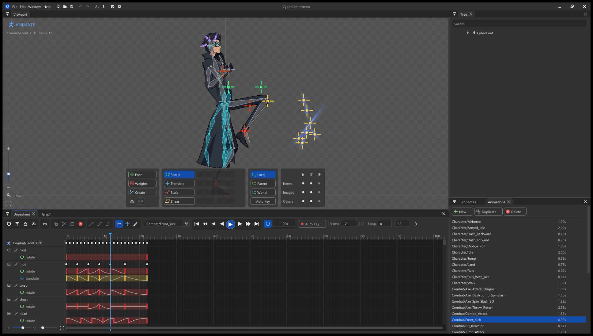
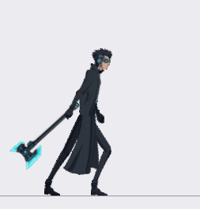
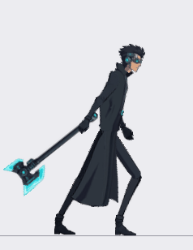
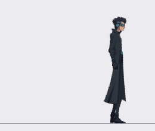

Skeletal 2D animation,
Draw bones over your art, key poses over time, and play the result in Unity or Godot. C++20, Direct3D 11, no account, instant start.
Download for Windows Getting started Runtimes 
Showcase One character (CyberCoat: 66 bones, 42 slots, 37 animations), rigged and animated in Osteon2D.



What it does
Rigging Bones, five inherit modes, slots, skins, draw order Rotate, translate, scale, shear gizmos PSD, image and folder import Art & weights Regions, meshes, linked meshes, clipping, paths, points Auto, smooth and brush weight painting Constraints IK, transform, path and physics Keyable properties, simulate and reset Animation Dopesheet, graph editor with Bezier handles Auto Key, ghosting, mixing preview Output Spine JSON (4.2 / 4.3 layouts), experimental binary .skel PNG sequences, GIF, video, texture atlas packer Safe & international Undo for every edit, auto-save, crash recovery UI in 8 languages
Runtimes
Godot 4 GDScript Core checked against the C++ engine in headless Godot; the Osteon2DSprite node renders in a real window.
Unity C# Core checked against the C++ engine. The renderer, importers and shaders are written but not yet run in a real Unity editor .
Full runtime documentation →
Independent by design Osteon2D is inspired by Spine but is its own project with its own code. It reads and writes the publicly documented Spine JSON format so work can move between tools. It is early alpha software (0.1.0): see PROGRESS.md for what is done and what is missing.
Osteon2D is MIT licensed and independent: not affiliated with Esoteric Software. "Spine" is a trademark of Esoteric Software LLC. · Source